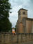
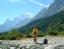
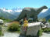
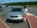

2001年8月17日 14時31分撮影
チャイルドシート座りなさいと注意され、口をとんがらす由起子。
2001年8月16日 9時12分撮影
ワインで有名な小さな町「シャンベルタン」での朝のお散歩。
一面に広がるブドウ畑は、とっても可愛い。2001年8月15日 11時27分撮影
ブレヴァン展望台から。後ろの山はモンブラン。気持ちイイー！
2001年8月14日 15時46分撮影
イタリア側から見たモンブラン。こちらからの眺めもサイコーです。2001年8月14日 11時5分撮影
フランス～スイス～イタリアへ。今日はお揃いのTシャツなのだ！2001年8月14日 8時55分撮影
朝のお散歩途中。
シャモニーの町からは、四方の山々がとっても綺麗に見えます。
2001年8月13日 14時34分撮影
スイスのエモッソン湖へ。ケーブルカーやパノラマ電車からの眺望が
素晴らしかった。付近に恐竜の足跡があるんだって。。。2001年8月13日 10時8分撮影
オンちゃん＆トステンとお別れの朝、一緒にお散歩しました。
パパに買ってもらったサングラス。お気に入りです。2001年8月12日 12時16分撮影
エギーユ・デュ・ミディ展望台にて。3800mからの眺めは
爽快です。目の前には4807mのモンブランが・・・！
2001年8月11日 12時6分撮影
旅行の間中、我が家のお供をしてくれるレンタカーです！